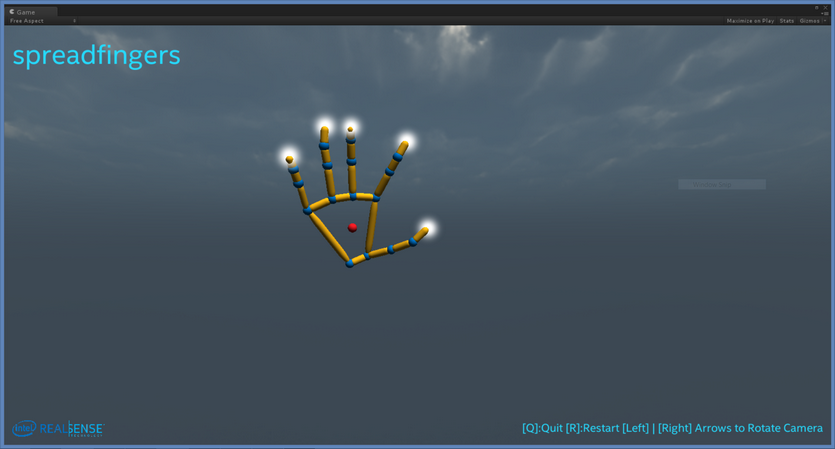

The FF_HandsViewer sample visualizes a 3D hand skeleton (or two hands) in the scene when the sample detects that there is a hand in front of the camera. The sample demonstrates the hand tracking module features. If there are hand gestures, the sample displays the recognized gesture text on top of the screen. This sample requires Unity v4.1.0 PRO.
Directory Structure
Directory/File |
Description |
Assets |
The Unity assets and project setting directories that contain source code. |
ProjectSettings |
Operation Instructions
The sample is located under $(RSSDK_DIR)/framework/Unity/FF_HandsViewer. Copy the sample source to a writable location and then click on Assets/Scenes/HandsViewer.unity to execute the sample.
Raise your hand(s) in front of the camera. The sample should show the hand skeleton(s) in the cloud, similar to Figure 168.
You can additionally change the view perspective (rotate the main camera) by using the left and right arrows. Use the R key to reset/restart, and the Q key to quit.

Figure 168: The Hands Viewer Main Window.
 If you see a warning message "NullReferenceException: Object reference not set to an instance of an object UnityEditor.DockArea.OnGUI()" while running your application in Unity Editor, close the Game and Scene windows and redo the window layout. The warning message should go away after the layout change. See also http://neareal.net/index.php?ComputerGraphics%2FUnity%2FTips%2FError%20UnityEditor.DockArea.OnGui() (In Japanese.)
If you see a warning message "NullReferenceException: Object reference not set to an instance of an object UnityEditor.DockArea.OnGUI()" while running your application in Unity Editor, close the Game and Scene windows and redo the window layout. The warning message should go away after the layout change. See also http://neareal.net/index.php?ComputerGraphics%2FUnity%2FTips%2FError%20UnityEditor.DockArea.OnGui() (In Japanese.)
Design Points
The script Scripts/HandsViewer.cs implements the SenseManager logic that initiates the hand tracking module, retrieves the hand location data when ready, and then maps to the hand skeleton, as a prefeb under Prefebs.